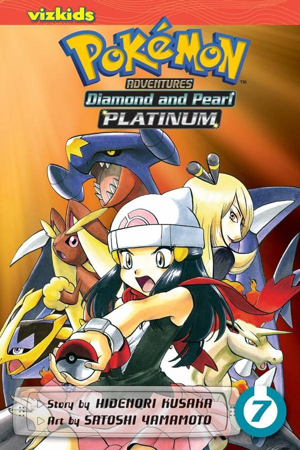

You can see a little example how the comics can be mixed with the augmented reality !
1. First download this app in PokeMangaAnimation or scan this QR on your android:
2. Install it and run!
3. Use your camera to look the picture of the comic and enjoy UniChan movements ... beware with the wild pokemons!
